A short documentary directed, shot and edited independently. Winner of a special mention at the Silver Frame Film Festival, and selected for Life After Oil and Wales One World film festivals.



“Sensitive camerawork and powerful images depict the connection between man, landscape, and tradition, supported by music that guides viewers through the beauty of their homeland.”
- Silver Frame Judge Panel